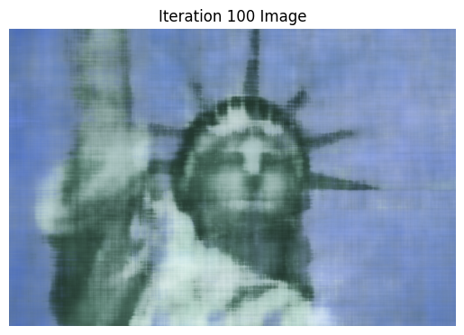

Final Project: Neural Radiance Fields (NeRF)
In this project, we implement neural radiance fields first in 2d, which learns to map pixel coordinates to RGB
values. Then, we implement NeRF in 3d, where the model learns a 3D model of the scene: the model is trained to
predicte RGB and density values for any 3D point, and we can use volumetric rendering to use these predictions
to generate an image from any camera viewpoints. These rendered images are compared with the training camera
images and used to train the model, as well as to generate novel views of the scene.
Part 1: Fit a Neural Field to a 2D Image
In this part, I create a neural field F: {u, v} -> {r, g, b} and optimize it to fit to a particular image. Here
is an overview of my implementation.
- Multilayer Perceptron (MLP): I use a stack of 4 linear layers and RelU, with a final sigmoid layer to output
RGB in [0, 1]^3, since all inputs into the model are normalized.
- Sinusoidal Positional Encoding (PE): To expand the dimensionality of the input into the network and have the
model pay attention to differing frequency components, I transform (x,y) by passsing x and y through sin()
and cos() of increasing frequencies. This leads to a 42-dimensional input into the MLP.
- Dataloader: instead of training the network with all pixels every iteration, I write a function that
randomly samples N pixels every iteration, returning their coordinates and RGB values.
- Training: For all tries, I used MSE(pred_RGB, actual_RGB) as my loss, Adam optimizer, learning_rate = 1e-2.
Using a batch
size of 10k and 1000 iterations, I trained the network.
I tried out 2 images. For each, Intermediate results of the model learning + PSNR plots are shown below, using 3
different hyperparameter settings.
For hyperparameter tuning, I tried varying L (controls the length of the sinusoidal PE) and num_MLP_layers.
| Fox Image |
| Default: lr=1e-2, num_MLP_layers=4, PE_L = 10 Label |
|
|
|
|
|
|
| Tune 1: PE_L = 30, everything else same |
|
|
|
|
|
|
| Tune 2: num_MLP_layers = 10, everything else same |
|
|
|
|
|
|
| Statue of Liberty Image |
| Default: lr=1e-2, num_MLP_layers=4, PE_L = 20 Label |
|
|
 |
|
|
|
| Tune 1: lr=1e-3, everything else same |
|
|
|
|
|
|
| Tune 2: PE_L = 5, everything else same |
|
|
|
|
|
|
Part 2: Fit a Neural Radiance Field from Multi-view Images
In this part, we implement the actual 3d-NeRF. We will use the neural radiance field to represent a 3D space. We
use the lego scene of (200, 200, 3) images and pre-processed camera locations. Here is an overview of everything
I implemented.
- Part 2.1, Create Rays from Cameras
- I implement transform(c2w, x_c), a batched function that takes a camera-to-world matrix, a point in
camera coordinates x_c, and returns x_w, the world coordinates of this point.
- Pixel to Camera Coordinates: I implement the batched function pixel_to_camera(K, uv, s): this takes
a pixel coordinate [u, v] and uses cameras' intrinsic matrix K and focal s in order to find x_c, the
corresponding camera coordinates of the pixel.
- Pixel to Ray: Here, I implement pixel_to_ray(K, c2w, uv): a ray is defined with 2 vectors- r_0 and
r_d. I found the origins r_0 by simply using the c2w matrix. To find r_d,
I used the 2 functions defined above to get X_w, and then the formula to get the normalized ray
direction.
- The end result of this part is a way to convert pixels in camera images to rays in 3D space.
- Part 2.2, Sampling
- Sampling Rays from Images: to sample N rays from M images, I first randomly select M cameras
(without
replacement), then N // M image-coordinates per camera. After shifting the image coordinates to
pixel
centers (by adding 0.5), I can then use pixel_to_ray from Part 2.1 to get a sample of N rays. I also
keep track of what the corresponding ground truth, corresponding pixels' RGB values are. This
function
ends up returning N rays, and their corresponding RGB.
- Sampling Points Along Rays: This part converts each ray above into discrete samples on the ray. I
sample points along the ray between near and far, evenly spaced out. Then, if perturb=True (which is
the
case for training), I randomly shift each sampled point by t_width * standard_gaussian. My
parameters
were: near=2, far=2, n_samples=64, t_width=0.02.
- The end result of this part is sampling rays from images, and then sampling points along these
rays.
- Part 2.3, Dataloader
- I use all the functions defined above in my training loop in order to load in batches.
sample_rays_from_images() returns rays, pixels. I then call points = points_along_rays(rays, ...).
This way, I can pass in points and rays_d into the model and get out density, color. Using
volumetric rendering (defined later), this gets converted to rendered_ccolors, and ultimately I can
traing using loss(rendered_colors, pixels).
- Part 2.4, Neural Radiance Field
- This part uses a MLP similar to Part 1. Inputs are now 3D world coordinates AND 3D vector of
ray_drection. The model learns to output the color(determined by both pos and r_d) and the
density(determined only by pos). Same as before, we use Sinusoidal Positional Embedding, linear and
Relu layers, and a final Sigmoid.
- The MLP was made deeper to handle this harder task. pos is also re-injected in the middle of the
MLP (through concat) so the model doesn't forget about it. r_d is similarly injected through
concatenation with the output of one of the linear layers.
- Part 2.5, Volume Rendering
- Given the model's predictions for (RGB, density) along all points on a ray, we can integrate these
values along the ray, weighted by the probability the ray doesn't "terminate" before that point, to
get the final
predicted pixel color (which is what is ultimately compared with the true pixel color).
- I use torch to implement the discrete sum approximation. Using torch also ensures we can
backpropagate our losses through this part.
- Training
-
I used Adam optimizer, learning_rate=5e-4. Every iteration, I sample rays+points along rays. I pass
in model(points, rays_d) to get predicted RGB and density, which then go into volrend() to produce
rendered_colors.
I then find loss(rendered_colors, pixels) and backpropagate.
- Every 100 iterations, I perform validation: this involves having the model ultimately predict pixel
values on the validation cameras. We then compute and track the validation loss by comparing with
the true images of the validation cameras. During validation, perturb=False for
sample_points_along_rays to ensure every validation iteration picks the same points.
- I also occasionally checkpoint- this was used to show the 2 novel-view videos below produced after
1 and 2 hours of training. The first checkpoint was after 2500 iterations, and the second and final
one after 5000 iterations.
- To generate the model's image from a viewpoint, I query the model for a bunch of rays through all
the pixels from this viewpoint, then assemble together the rendered colors returned to display the
model's predicted image.
Part 2 Results
Below I highlight the following:
- Visualization of Rays and Samples
- Training Process: same image shown across training iterations. The first row highlights progress after 1
hour of training (checkpoint), the second row continued trianing with this model and shows the next 2500
iterations.
- PSNR curve on the training set
- PSNR curve on the validation set
- Novel View Video (produced using test set cameras) after 1 hour of training
- Novel View Video (produced using test set cameras) after 2 hours of training
Here, I visualize: 1) 100 rays (1 from each camera randomly chosen), cameras, as well as the sample points
along the rays, and 2)100 randomly chosen rays and sample points for 1 camera view.
100 Rays/Cameras/Points Visualization
|
1 Camera Points Visualization
|
|
|
|
Video after 1 hour (2500 iterations) of training
|
Video after 2 hours (5000 iterations) of training
|
Bells and Whistles
By modifying the volrend function to take in an additional background_color tensor, we can render the above
video with a different background color. Specifically, I add background_color, weighted by the "final"
transmittance (found by multipylying all the T values), into the rendered_colors, and this makes only the
background change color
(since the transmittance for pixels of the Lego object would be very small).
Below, I use the 5000 iteration checkpoint model to render the Lego video with Red,
Green, and Blue backgrounds.